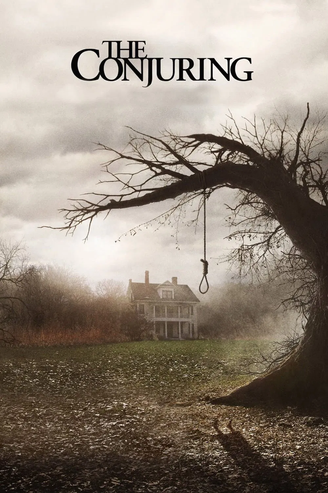
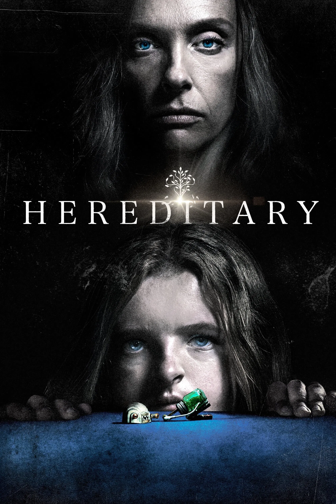
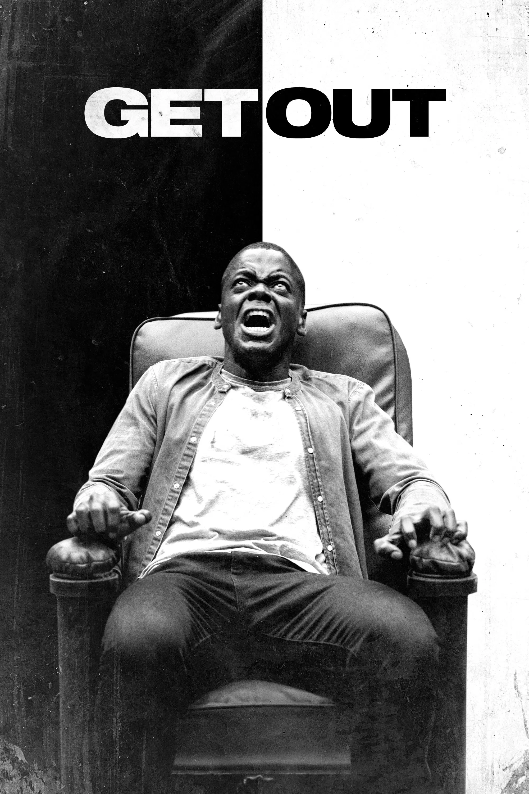
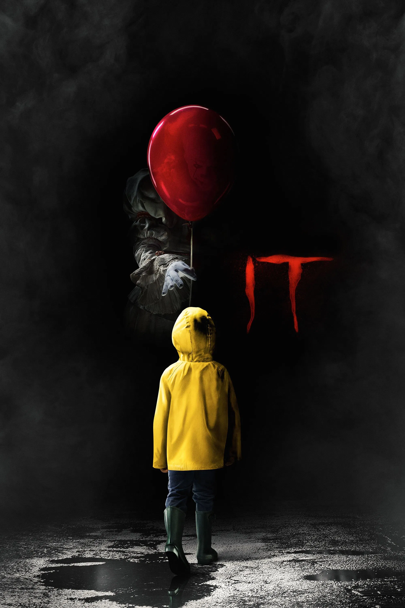
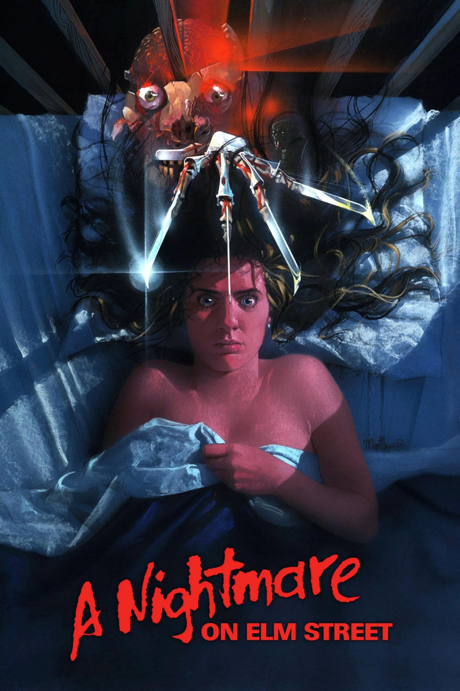

¿Sabías que…?
en The Lord of the Rings, el actor Viggo Mortensen (Aragorn) realmente se rompió un dedo del pie? Fue durante la escena en la que patea un casco tras encontrar las ruinas de los orcos. Su grito de dolor fue totalmente real, y la toma quedó tan bien que el director la dejó en la película.

VIDEO
curiosidades🎬
La película está basada en hechos reales, los casos de Ed y Lorraine Warren, famosos investigadores paranormales.
La casa de los Perron se filmó en una locación real en Rhode Island, con algunos elementos añadidos para dar más miedo.
Vera Farmiga y Patrick Wilson entrenaron con los Warren reales para entender mejor sus gestos y lenguaje corporal.
James Wan utilizó cámaras de 16 mm y técnicas clásicas de terror, en lugar de depender solo de CGI, para aumentar la tensión.
Casos paranormales con mucho susto y atmósfera.

VIDEO
curiosidades🎬
La casa donde ocurre la película fue elegida cuidadosamente por su luz natural y su atmósfera inquietante, casi un personaje más.
Toni Collette improvisó varias escenas, incluyendo expresiones de terror que quedaron en la versión final.
El director Ari Aster se inspiró en su propia familia y en la experiencia de pérdidas para crear el tono emocional de la película.
Muchas escenas fueron filmadas con planos largos y movimientos de cámara fluidos para aumentar la tensión psicológica sin recurrir a jumpscares.
Terror psicológico intenso y perturbador.

VIDEO
curiosidades🎬
Jordan Peele escribió y dirigió la película, inspirándose en su experiencia como hombre negro en Estados Unidos y combinando terror con crítica social.
La casa de los Armitage estaba inspirada en una arquitectura real de Michigan, diseñada para sentirse tanto acogedora como inquietante.
El sonido del “Sunken Place” fue creado con efectos de voz y manipulación digital para dar sensación de aislamiento total.
Ganó el Óscar a Mejor Guion Original, convirtiendo a Jordan Peele en el primer afroamericano en recibir este premio en la categoría.
Terror con crítica social y mucha tensión.

VIDEO
curiosidades🎬
Bill Skarsgård hizo su propio diseño de voz de Pennywise, inspirándose en sonidos animales y risas distorsionadas.
La ciudad de Derry se construyó parcialmente en sets, combinada con tomas reales de Toronto.
Los actores infantiles entrenaron intensamente juntos para crear la química del “Club de los Perdedores”.
Algunas escenas de terror se filmaron de noche, y los jóvenes actores tuvieron que soportar temperaturas muy bajas para mayor realismo.
Adaptación del clásico de Stephen King.
A Nightmare on Elm Street (1984)

VIDEO
curiosidades🎬
Wes Craven se inspiró en noticias reales sobre personas que murieron mientras dormían debido a ataques de parálisis del sueño.
Freddy Krueger originalmente era mucho más aterrador, con un guante de cuchillas más largo y una personalidad más sádica.
El maquillaje y efectos prácticos eran innovadores para la época, incluyendo la famosa escena del “cuerpo estirándose en la pared”.
Johnny Depp hizo su debut cinematográfico interpretando a Glen, uno de los jóvenes protagonistas.
Clásico del terror sobrenatural con Freddy Krueger.
Subir